Publication
Takumi Yamamoto, Jiaji Li, Akib Zaman, Noah Barnes, Yuta Sugiura, Stefanie Mueller, Koya Narumi
Zip-up Print: Rapid and Assemblable 3D Printing Using 2D Flattened Zipper-like Structures
Published at ACM CHI '26.
DOI PDF Video Slides
Zip-up Print: Rapid and Assemblable 3D Printing Using 2D Flattened Zipper-like Structures
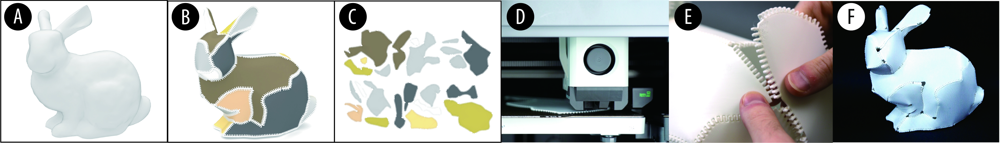
Figure 1. Zip-up Print workflow: an input 3D model is converted into developable zipper-attached patches, flattened for printing, and then manually assembled back into a 3D object.
ABSTRACT
We propose Zip-up Print, a fabrication method that produces 3D objects as flattened 3D-printed pieces with integrated zipper-like structures and then reconstructs them by manual assembly. Instead of printing a complex object directly with supports and infill, Zip-up Print divides an input model into developable patches, generates zipper structures along patch boundaries, and flattens the result into printable 2D layouts. The resulting workflow reduces support material and fabrication time, enables objects larger than the printer build volume, and supports post-print modification by allowing individual pieces to be detached and replaced.
INTRODUCTION
Desktop FDM printers let people fabricate increasingly complex shapes, but they still come with familiar pain points: support material waste, long print times, limited build volume, and the need to reprint an entire object when only one region needs to change. These constraints are especially frustrating for large curved objects, where conventional printing tends to be slow, support-heavy, and difficult to revise once finished.
Prior work has mainly pushed in two directions. One is flatten-first fabrication, such as 4D printing and self-folding systems, which can reduce support and print time but remain limited by bed size and usually do not support partial replacement after printing. The other is part-based printing, which supports larger objects and modular assembly, but often keeps each piece volumetric rather than fully flattened, so the time and material savings are more limited. In addition, parts are often joined with glue or screws, making repeated assembly and disassembly inconvenient.
Zip-up Print aims for a middle ground between these approaches. It breaks a 3D model into pieces, prints those pieces in flattened form, and reconnects them with a fully 3D-printable zipper-like structure that supports iterative attachment and detachment. The zipper geometry is designed so the teeth can be printed parallel to the surface, which helps preserve print quality and reduce support, while ball-and-socket style engagement allows neighboring patches to connect even when their angles differ.
Together, the system offers a practical route toward faster, more assemblable 3D printing. It supports large objects beyond a single printer's build volume, makes selective part replacement possible, and opens a design space for reconfigurable printed artifacts rather than single-use static prints.
ZIPPER DESIGN
Zip-up Print starts from a design problem that seems simple but is surprisingly tricky in practice: how do you attach zipper structures to arbitrary surface patches while keeping them printable without heavy support material? Conventional zippers assume the two rows of teeth remain parallel to each other. That works on flat textiles, but once two connected patches meet at an angle, keeping the teeth parallel causes the tooth geometry to tilt relative to the surface and protrude into space as overhangs.
Zip-up Print resolves this by aligning the zipper teeth with the surface patches themselves rather than with each other. This keeps each patch essentially planar for printing, but it means the zipper must still connect even when neighboring patches meet at different orientations after assembly. To handle that, the paper introduces a ball-and-socket tooth design: each tooth integrates a ball feature and a corresponding socket so adjacent teeth can interlock with some angular freedom.
This choice creates a useful balance. During assembly, the spherical contact makes it easier to snap pieces together from slightly different directions, which matters because users often assemble the object while bending the flexible printed patches. After assembly, the teeth still provide enough constraint to reconstruct the intended shape while remaining detachable. The paper further discusses parameter controls for thickness, tooth height, widths, guide spacing, socket radii, and surface thickness, which together shape the tradeoff between printability, ease of assembly, and holding force.
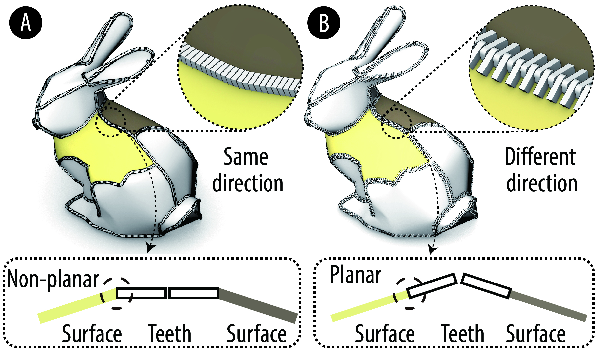
Figure 2. Compared with conventional zipper alignment, Zip-up Print aligns zipper teeth with each surface patch so the pieces stay planar and printable before assembly.
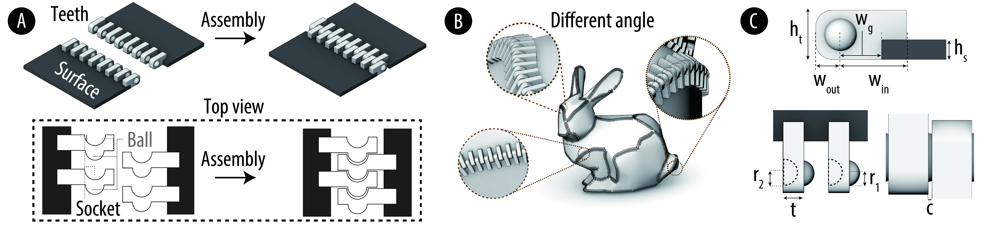
Figure 3. Zipper geometry and parameters, including the ball-and-socket tooth structure that allows angle-independent connections between flattened patches.
GENERATION PIPELINE
Given an input 3D mesh, the pipeline first converts it into developable patches that can be flattened with limited distortion. The implementation builds on Zhao et al.'s developable-approximation method and then loads the resulting segmented meshes into a Grasshopper-based workflow. This establishes the coarse part decomposition that makes large or support-heavy models printable as multiple flattened pieces.
Because automatic decomposition alone is not always enough, Zip-up Print also keeps the user in the loop. If a flattened piece would exceed the print bed, the user can add more seams interactively. These seams are defined on the mesh in Rhino, converted into polylines, and then used to subdivide oversized pieces further until everything fits within the target printer volume.
After segmentation, the system detects shared boundary edges between adjacent patches and generates zipper surfaces along those boundaries. The pipeline estimates local patch angles from tangents and normals so it can offset and trim the geometry consistently, then alternates zipper features across neighboring pieces so the parts can interlock after printing. Finally, the zipper-attached surfaces are flattened into 2D layouts that can be sent directly to a standard slicer.
The result is an end-to-end workflow that transforms a curved 3D shell into flat printable patches while preserving enough geometric information to reassemble the model later. This is the core move that turns a large support-heavy shape into a quicker, more material-efficient fabrication job.
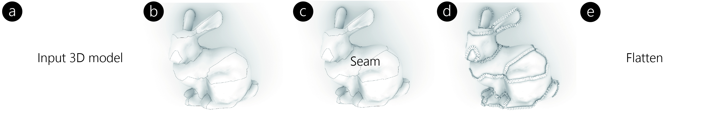
Figure 4. System pipeline from input mesh, to developable segmentation, to user-added seams, zipper generation, and flattened printable output.
DESIGN TOOL
The authors implemented a Grasshopper interface using Human UI so that the full workflow can be used without manually scripting each step. The interface supports three main phases: model import and automatic developable approximation, interactive seam editing for oversized pieces, and zipper generation plus flattening. Users can preview the imported geometry, trigger developable conversion, inspect which pieces exceed the build volume, add cut lines, and then expose zipper parameters such as tooth thickness, spacing, widths, and ball/socket radii before generating the final printable layouts.
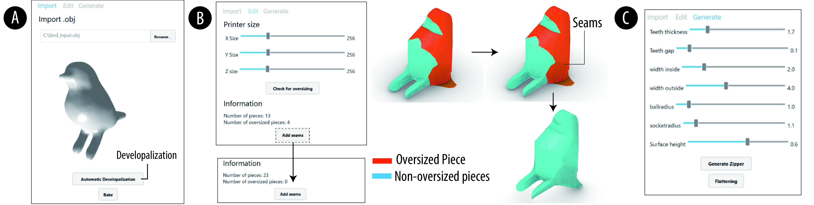
Figure 5. The Grasshopper-based interface supports model import, interactive seam addition for oversized pieces, and zipper generation plus flattening.
FABRICATION RESULTS AND EVALUATION
To evaluate the pipeline, the paper reports fabricated examples including a drill, bear, Moai statue, duck, Stanford bunny, and bird. Several of these exceed the build volume of the Bambu X1 Carbon printer used in the study, but become fabricable once segmented into zipper-connected developable patches. The printed results show that the method can reconstruct diverse curved shell geometries while keeping the pieces individually printable.
Shape accuracy was measured by scanning the fabricated objects, aligning them to the target developable models, and computing normalized geometric error. Across the six examples, the reported structural error ranges from 2.74% to 4.67%, averaging 3.77%. Surface coverage also remains high despite small boundary gaps around branching points, staying above 98% for all tested objects.

Figure 6. Fabricated models and scan-based accuracy visualization for six examples, showing reconstruction quality across different geometries.
The material and time savings are one of the clearest wins. Compared with conventional direct printing, support material consumption decreases by an average of 78.65%, while total material consumption drops by 77.43% because the method avoids both large support structures and much of the infill required by volumetric prints. When fabrication time includes both printing and manual assembly, the method still reduces total fabrication time by an average of 44.4%, with larger objects benefiting the most.
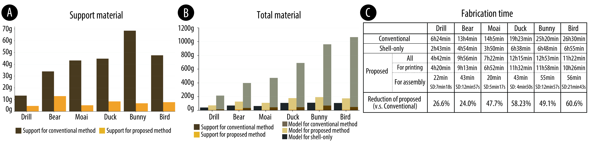
Figure 7. Evaluation of support material, total material, and fabrication time, showing substantial savings compared with conventional 3D printing.
The paper also reports a small assembly study with five participants. Participants described the process as enjoyable and LEGO-like, but also pointed out that the final patch is often the hardest to install because there is no way to support the object from the inside once most seams are already closed. Several participants suggested that assembly order matters a lot and that the system would benefit from indicating a recommended sequence.
Mechanical testing focused on normal force and peeling force, which capture how strongly the zipper resists sliding apart and peeling open. Scaling up the tooth geometry increases both forces in an approximately linear way, which provides a straightforward design knob for making the zipper stronger. A 200-cycle durability test further shows a short break-in phase during roughly the first 10 cycles, after which the forces stabilize and decline much more gradually.
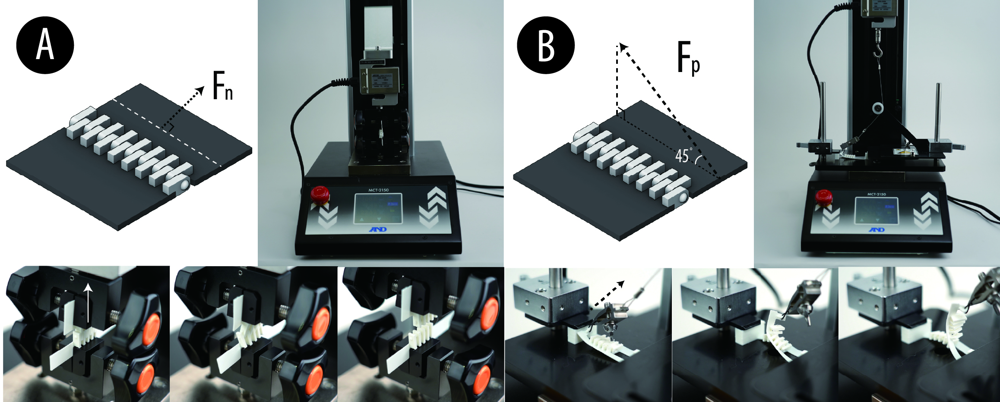
Figure 8. Mechanical evaluation setup for normal force and peeling force, used to study scaling behavior and durability across repeated assembly cycles.
APPLICATIONS
Because the zipper-connected patches are detachable, Zip-up Print naturally supports modification after fabrication rather than only before it. The paper demonstrates this through several application examples that treat a printed object as something users can revise, customize, and reconfigure over time.
One set of examples explores visual customization. A bear model is segmented so the eye regions become replaceable patches, making it easy to swap facial expressions without reprinting the full object. A similar idea is applied to a hat, where selected pieces can be exchanged to switch between different silhouettes while reusing the rest of the printed structure.
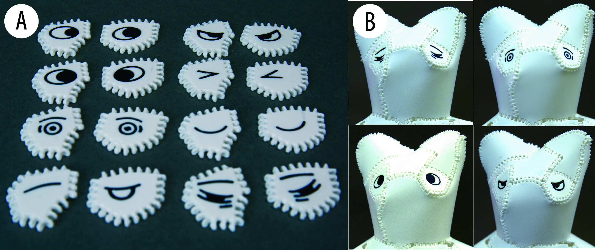
Figure 9. Replaceable face patches allow the same bear model to support multiple eye designs and facial variations.
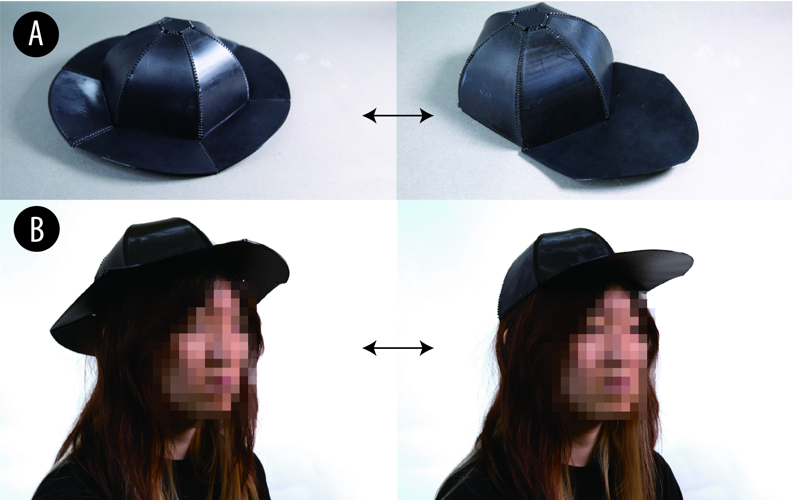
Figure 10. Hat pieces can be swapped to create different brim configurations while reusing shared parts.
The method also combines well with conventional printing. In the bunny example, the main shell is produced as zipper-connected developable patches while the tail is printed conventionally and swapped between different versions. This hybrid strategy is useful because Zip-up Print is fast and scalable for shells, while conventional printing remains better for stiff or highly non-developable local details.
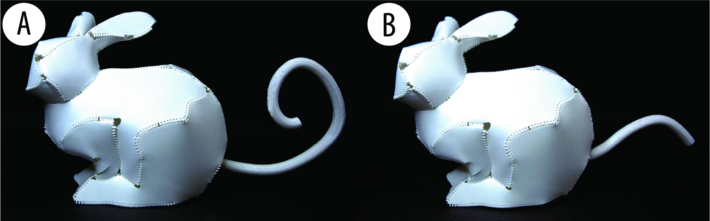
Figure 11. Zip-up Print can be combined with conventional 3D printing to swap more complex or rigid details, such as alternative bunny tails.
Another example uses the zipper as an interaction mechanism rather than only a fastening strategy. A banana-like object can be peeled open to reveal an inner core, showing how the system supports transformations in surface state that are difficult to achieve with traditional monolithic printing. The paper also includes a large lampshade that exceeds the printer's native build volume and a bird model with a swappable textured patch for changing tactile surface qualities.
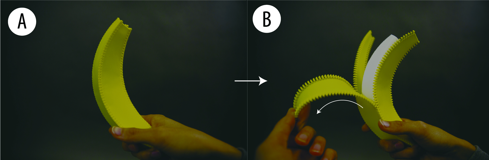
Figure 12. A banana-like object uses zipper-connected peel segments to support a peel-away interaction.
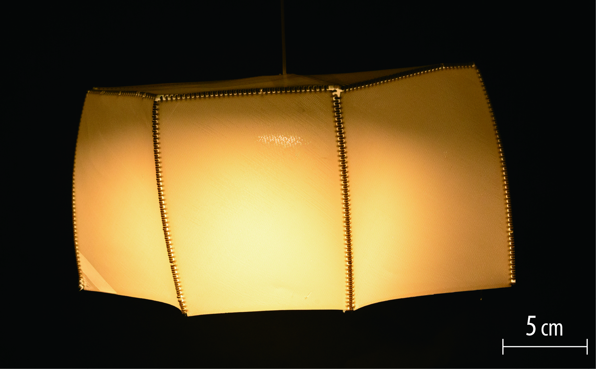
Figure 13. A large lampshade fabricated beyond the build volume of a single desktop printer by segmenting it into zipper-connected flattened pieces.
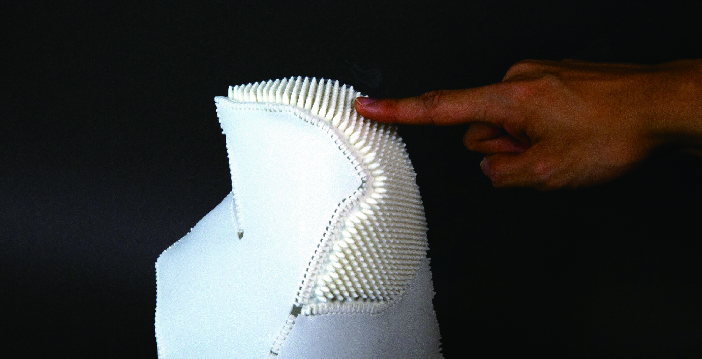
Figure 14. A bird model with a replaceable textured patch demonstrates localized tactile modification after printing.
DISCUSSION, LIMITATIONS, AND FUTURE WORK
The discussion highlights several tradeoffs in the current system. One is the relationship between tooth count and assembly. More teeth help the zipper follow higher-curvature boundaries, but they also make assembly slower and more demanding. Another issue appears at branching points, where teeth may need to be removed to avoid collisions. This can leave small holes in the reconstructed surface, although the paper shows that outward expansion of non-toothed boundary regions substantially reduces the visible gaps.
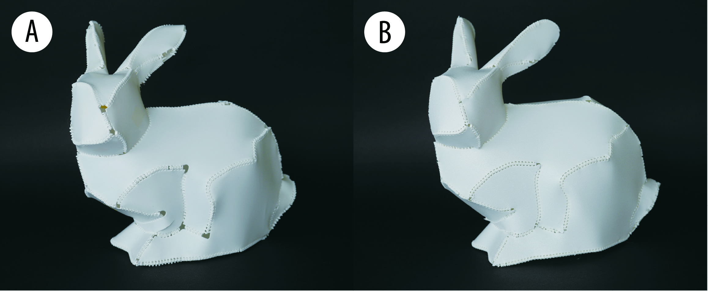
Figure 15. Outward expansion of non-toothed boundary regions reduces holes that otherwise appear where multiple seams meet.
The paper also points out limits in the developable-approximation stage. Automatically generated patches can become too fine, which increases assembly burden and can cause issues when the flattened patches are offset to make room for zipper geometry. Symmetric objects can also lose symmetry during developable optimization, so the authors demonstrate a simple mirroring-based workaround and suggest more symmetry-aware segmentation as future work.
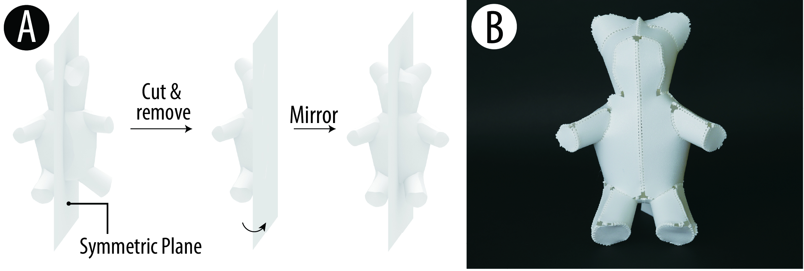
Figure 16. A simple symmetry-preservation strategy mirrors one half of a model to recover symmetric developable patches when the automatic process drifts away from symmetry.
Finally, the paper explores what a zipper slider might look like in this context. A prototype slider works when the local tooth angle remains relatively constant, but a general-purpose slider for arbitrary changing patch angles remains unsolved. This is an interesting future direction because it could make assembly faster and potentially support richer zipper-based interaction.
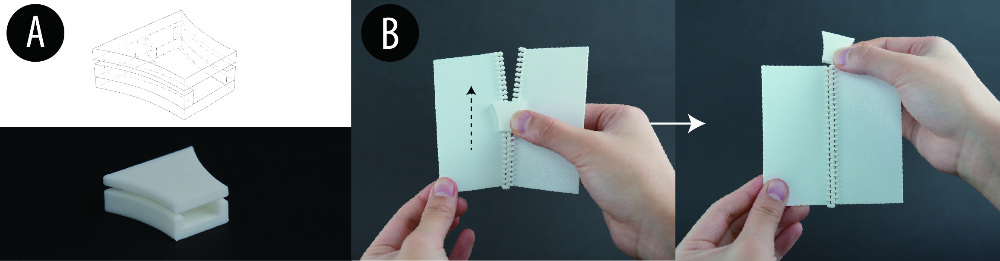
Figure 17. A prototype slider suggests one path toward faster assembly, but a fully angle-adaptive slider for arbitrary shapes remains future work.
CONCLUSION
Zip-up Print turns complex 3D shells into flattened, zipper-connected printed pieces that can be assembled into accurate 3D objects with less support material, shorter total fabrication time, and greater post-print revisability. By combining a printable angle-independent zipper design with a segmentation, zipper-generation, and flattening pipeline, the system expands what desktop FDM fabrication can do for large, curved, and customizable objects. Just as importantly, it reframes printed objects as revisable assemblies rather than fixed monoliths.